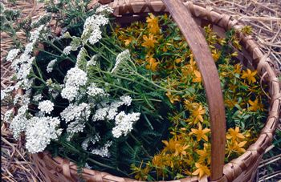
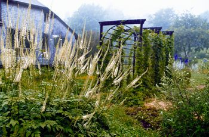
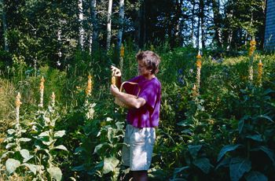
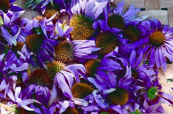
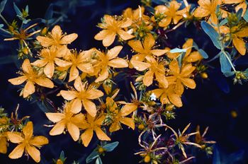
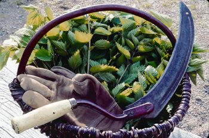
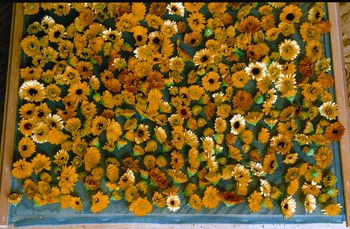
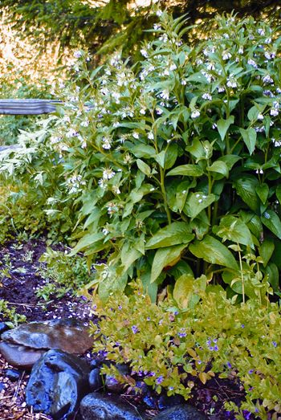
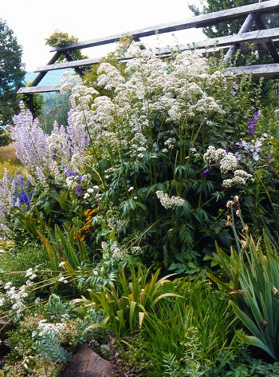
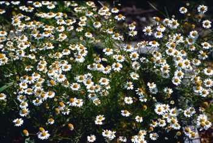

You might be surprised to learn that you can grow medicine in your own back yard. Although many homesteaders embrace herbal medicine, not everyone realizes how well these traditional medicines work, or that you can grow them on your own land.
One obstacle is that many people still equate herbal medicine with superstition, thinking it’s all folklore, of no proven value. But if that were true, it would be a surprise to the big pharmaceutical companies that are scrambling to isolate and test the active components of many traditional medicinal plants. A number of powerful pharmaceuticals, for example, have been derived from wild yam. Willow and meadowsweet contain salicylic acid, with analgesic effects like aspirin - but with fewer side effects. Controlled experiments with valerian have supported its traditional use as a sedative to relieve spasms and induce sleep.
The other obstacle to home use of medicinal herbs is just the reverse - the assumption that herbal lore is so arcane that we inexpert homesteaders cannot hope to master it without years of study. If this is the case, I suggest you take a look at some common medicinal herbs, such as the list below. These herbs are from a very helpful book, The Herbal Medicine-Maker’s Handbook by James Green. He presents these “top 30” medicinal herbs, citing a list from the California School of Herbal Studies. Glance over these herbs, and you may find yourself saying one of the following:
“Hey, this looks easy!” Many of these plants are well known, and may already be growing in your landscape or garden. Blackberry, calendula, chamomile, comfrey and willow - who knew that these ubiquitous and unobtrusive members of our communities would be in a “top 30” list of medicinal herbs?
“Some of these are weeds, for heaven’s sake!” We’ve been conditioned to think of dandelion, plantain, stinging nettle and yellow dock as “the enemy” in our gardens and yards. Perhaps it’s time for us to revise our conception of “weeds.” The insistence of a plant on being a part of our local ecology suggests that we explore its role and contribution, rather than devise strategies to eradicate it. Any plant that offers to boost our health should be welcomed and honored, not denigrated as a “weed.”
“Hey, I grow that for food!” It’s too bad that in our time “medicine” has come to be understood as a powerful, out of the ordinary - and probably vile tasting - substance taken in a heroic intervention to cure illness. An alternative view has been available at least as far back as 400 B.C., when Hippocrates said, “Let your food be your medicine, and your medicine be your food.”
Regular readers know that I emphasize integrating components already on the homestead so that one project serves several needs. Growing medicinal herbs fits right in with that strategy.
Medicinal herbs as foods. As already stated, many of the plants we’ve come to rely on for food also offer medicinal actions. In some cases, the medicinal part is different from the food part - for example, it is often the root bark of blackberry which is used medicinally. But in many cases, it is the edible part of the plant itself which is a kind of “superfood,” toning and balancing the body while adding “punctuation” to our meals, such as cayenne (a general, circulatory and digestive system tonic), fennel, ginger and peppermint. We should incorporate such herbs more frequently into our diets, and explore their use in a more directed way when there is a special need. We might make an infusion of fennel, for example, to treat colic, or to stimulate digestion or appetite.
Herbs can be used to make other foods with medicinal effects. In previous eras, a wide range of medicinal herbs - yarrow, ginger, wintergreen, licorice, St. John’s wort, elder flowers and berries - were used to flavor and preserve beers and ales. Mead, a fermented beverage made from honey, has medicinal effects in its own right, but can also be made with herbs such as heather that boost its medicinal properties. Vinegars and vegetable oils can be infused with herbs such as rosemary, garlic and cayenne, and used on salads and other dishes to promote health.
Boosting insect diversity. Wise homesteaders know that the solution to damaging insects is not a program for killing insects, but encouraging even more insect diversity, especially by cultivating plants that flower throughout the growing season. Many common medicinal herbs - such as calendula, chamomile, echinacea, fennel, peppermint and yarrow - are flowering plants, and offer the valuable “fringe benefit” of providing food and shelter for beneficials as well. Plantings of flowering herbs are more effective at encouraging our insect buddies if incorporated among the crops to be protected, rather than planted in their own little fiefdoms.
Herbs as fertility plants. Smart homesteaders also know it is possible to grow more of our own soil fertility. Isn’t it fortunate that some of the best fertility plants have medicinal properties as well? Comfrey (used for healing wounds and broken bones) and nettle are high in protein (nitrogen), and can be used as nutritive mulches or to “spark” a compost heap. Dandelion and yellow dock are deep-rooted dynamic accumulators which “mine” minerals from the subsoil and make them available to more shallow-rooted crops.
Herbs as fodder crops. Many medicinal plants do double duty to provide fresh green (or dried) fodder for our livestock. I find that dandelion and yellow dock stay green deeper into winter’s chill than any other forage plant - I dig them up and feed them to my winter poultry flock by the bucketful. Oats make an excellent nerve tonic, and can be used to feed livestock as well, either cut and fed green, or self-harvested by the animals. My geese love comfrey.
Other ecological or landscape uses. Hawthorn and willow might be planted for shade, as a windbreak or as a “living fence.” As such they offer important ecological benefits (bird and wildlife shelter, and moderation of the effects of wind, heat and loss of soil moisture to evaporation) in addition to their medicinal uses.
Where should you grow your medicinal herbs? Everywhere you possibly can. There are traditional medicinal plants to fit any micro-ecology on the homestead. For example, the drier, more exposed parts of the homestead can be planted with chaste berry, lovage, milk thistle, rosemary, rue, clary sage, hyssop, lavender, lemon balm and thyme. Wetter areas might host mullein, peppermint, selfheal, angelica, cardinal flower, goldenrod and scullcap.
I planted a woodland garden of medicinal and culinary herbs in a fold of our small woodlot, which is more likely to stay moist than any other location on our property. Shade-loving herbs growing there include goldenseal (an important antimicrobial for acute infections, a key medicinal plant of many Native American tribes), bloodroot, downy rattlesnake plantain, Solomon’s seal, wild ginger, spikenard, wild yam, black cohosh and blue cohosh.
You may have been told that herbs “like to grow in poor soil.” While it is true that most herbs do not have the high nitrogen requirements of heavy feeders like corn and squash, every plant prefers to grow in soil that is loved and nurtured. Just as in the rest of the garden, do everything you can to increase the organic matter in your soil (adding composts, using mulches, growing cover crops), and your medicinal plantings will respond accordingly.
Many medicinal herbs also can be found in the wild, but unfortunately many are threatened by overharvesting. Responsible herbalists avoid “wild-crafting” of endangered herbal species - and indeed, help preserve these precious parts of our ecological heritage by growing and propagating herbs like goldenseal, pipsissewa, black cohosh, American ginseng and bloodroot.
Let your kitchen be your pharmacy. With a reliable beginner’s guide to home medicine, you will require no equipment other than the pans, bowls, strainers, funnels, measuring utensils and electric coffee grinder probably already in your kitchen. If you get excited about the process, you can add items such as presses and distilling equipment for making more sophisticated extractions.
You will be amazed that you can duplicate in your kitchen all the forms in which you have encountered “medicines” in the past: tinctures (based on alcohol, glycerin, vinegar and even wine), infusions (herbal medicines can be as simple as a cup of tea) and decoctions, lozenges, capsules, syrups, salves and lotions - as well as some that are new to you (but would not have been to your grandmother) such as poultices, fomentations and herbed water baths.
Traditional herbal practices almost always use the whole plant, or extracts of them, as medicine. Modern pharmaceutical preference for isolating a single component of a plant as the “active ingredient,” and administering that element in isolation from its hundreds of other compounds, may be one reason for the greater incidence of unintended side effects of modern medicines, to say nothing of their vastly increased cost. Not only do the complementary compounds of the whole plant help balance its actions and alleviate possible side effects, there is evidence that some may help “feed” our vital intestinal flora, and thus act as a beneficial (and free) probiotic in the digestive tract.
The fact that herbal medicines are “natural” does not mean they can be used without regard to possible hazards. Some of our potential plant allies are quite powerful indeed, and can be dangerous if misused. Some can be confused with dangerous look-alikes as well, if we are not careful. Here are some essential, but common-sense, rules for safe medicinal use of plants:
Know the plant. Proper plant identification is crucial - there is no room for carelessness or guessing games. Fennel is a common medicinal herb, and closely related species such as parsley, celery, dill, cilantro and lovage have a long history of medicinal use as well. But two members of this family are deadly poisonous - water hemlock and poison hemlock - and mistakes with these look-alikes can be fatal. This sounds scary, but we need simply to practice the same common sense we use when instructing our children about any hazardous plant in their environment - whether poison ivy, jimsonweed or lily-of-the-valley.
Know the part to be used. It may be that one part of a traditional medicinal plant is safe to use, while others are off limits. For example, elderberry flowers and berries are safe for the beginner to use (to make medicines for flu and fever), but the bark can have toxic effects.
Know the application. Some plants that can be seriously toxic if taken internally can be safely used externally. An excellent example is foxglove (digitalis), which can be fatal if ingested, but can be used to make a fomentation to promote wound healing.
Know the dosage. It should never be assumed that “if a little is good, a little more is even better.” Indeed, James Green observes that small doses of German chamomile can provide positive effects for the nervous system that larger doses cannot duplicate. In some cases, the possibility of side effects or toxicity goes up with increasing dosage. Remember that dosage is keyed to body weight as well, so special care must be taken when administering herbal medicines to children.
Know potential side effects. Though unwelcome side effects are much less common in herbal medicine than in pharmaceuticals, it is wise to “read and heed” herbal literature to minimize possible side effects. For example, herbals high in tannins - such as yellow dock (a liver stimulant and laxative) - can be a problem for individuals with a history of kidney stones.
Remember individual sensitivities. An individual might have an allergic reaction to a medicinal plant safely used by others. When beginning use of a medicinal herb (just as when trying a new food) start with a reduced amount and work up to a normal dose.
Be aware of restrictions on use. Some herbs safe to use by the general patient may not be appropriate for children or the elderly. Most importantly, pregnant women should always be considered a special case. With regard to any plant medicine, the responsible herbalist will consider the issue of safe use during pregnancy and will err on the side of caution. Some herbs such as black cohosh, comfrey, goldenseal, mugwort and yarrow should be avoided entirely by pregnant women. Others such as cayenne and ginger might be used, but very sparingly.
Recognize the limits of your own expertise. There are many herbs that are easy and safe for the beginner to use. A good place to start is with herbs commonly used as food and in teas. Others require far greater experience, knowledge and skill. In the case of elderberry bark, mentioned above, it actually is used medicinally, even for internal applications. However, it is strong medicine indeed and should be used only by those who know what they are doing. The rest of us should stick with the more user-friendly plants and applications and seek out a reliable teacher if we want to advance.
You may discover as you honor and get to know medicinal herbs, wild and cultivated, that your relationship with these plants grows ever more intimate, more personal. Herbal medicine is not just about using plants to synthesize compounds we match one-for-one with symptoms of illness. While the chemicals plants create can indeed be healing, our growing alliances with plants are even more so.
You may find in your walks through wood and meadow that a certain plant “steps out” of the background and presents itself to you in a personal way. Or you may experience a sense of recognition, of kinship, as you plant a particular herb. Pay attention to such moments and to such plants - they are offers of alliance, opportunities to heal the rift that has opened between us and the living world. This is the best medicine of all.
Find 30 Medicinal Herbs and Common Uses in an easy-to-read chart.
Growing 101 Herbs That Heal by Tammi Hartung is an excellent overview of medicinal herb gardening.
The Herbal Medicine-Maker’s Handbook by James Green may be the best book for the beginner on making plant medicines in the home.
Making Plant Medicine by Richo Cech is another guide to herbal medicine making, including “A Gardener’s Herbal Formulary” in which many plants are considered in detail with regard to parts used, medicinal applications, typical methods of processing and dosages.
Planting the Future: Saving Our Medicinal Herbs, edited by Rosemary Gladstar and Pamela Hirsch for United Plant Savers, is a guide for herbalists concerned about over-harvesting threats to some of our most valuable medicine plants.
Growing At-Risk Medicinal Herbs by Richo Cech is a good companion to the United Plant Savers book. A guide to the sometimes tricky requirements for growing, and thus preserving, some of the at-risk healing herbs.
101 Medicinal Herbs by Steven Foster is a good, quick overview of the more common and accessible medicinal plants.
A Field Guide to Medicinal Plants and Herbs by Steven Foster and James A. Duke is part of the Peterson Field Guide Series. (This one is for eastern and central North America.)
The Herb Companion magazine has extensive information on growing and using herbs.
|
 LYNN KARLIN Why not grow a few herbs at home? Many of these plants are both beautiful and medicinal, including yarrow(white flowers) and St. John’s wort (yellow flowers), which are pictured above. |
 LYNN KARLIN Black cohosh is threatened by overharvesting in the wild, but it looks lovely in this garden. |
 LYNN KARLIN Mullein can be used to treat a sore throat. |
|
 LYNN KARLIN Echinacea is often used to boost the immune system. |
 DAVID CAVAGNARO St. John’s Wort is an herbal antidepressant. |
 LYNN KARLIN One of the many ways stinging nettles are used in herbal medicines is as a treatment for allergies. |
|
 LYNN KARLIN Calendula is sometimes used to treat wounds. |
 RICK WETHERBEE Comfrey leaves can be applied externally to treat bruises or sprains. |
 RICK WETHERBEE Valerian is often used as a sedative |
|
 RICK WETHERBEE Drinking chamomile tea helps calm an upset stomach, and you can grow this lovely herb right in your own garden. |
|
|